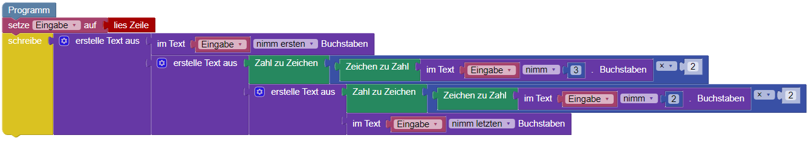

Integer und Strings
Wir haben gelernt, dass es teilweise nötig ist eine Zeichenkette in einen Integer umzuwandeln.
Zum Beispiel, wenn wir mit der Zahl rechnen wollen. Das Umwandeln können wir mit dem Baustein
 machen.
machen.
Wenn wir einen Integer in eine Zeichenkette umwandeln wollen, dann können wir das mit dem Baustein machen.
Aufgabe: Kann es auch notwendig sein, eine Zahl wieder in eine Zeichenkette umzuwandeln? Falls ja, wann und warum?
Wir haben gelernt, dass es teilweise nötig ist eine Zeichenkette in einen Integer umzuwandeln.
Zum Beispiel, wenn wir mit der Zahl rechnen wollen. Das Umwandeln können wir mit der Funktion
int() machen.
Wenn wir einen Integer in eine Zeichenkette umwandeln wollen, dann können wir das mit
der Funktion str() machen.
Aufgabe: Kann es auch notwendig sein, eine Zahl wieder in eine Zeichenkette umzuwandeln? Falls ja, wann und warum?
Zeichenketten bieten uns einige Funktionen und Möglichkeiten, die uns Integer nicht bieten. So können wir zum Beispiel bei einer Zeichenkette auf eine einzelne Stelle zugreifen, einen sogenannten Index. Oder wir können uns die Länge der Zeichenkette ausgeben.
Aufgabe: Lest die Eingabe ein und gebt die Länge der Zeichenkette, sowie die erste und die letzte Ziffer der Zahl aus. Probiert das gleiche, wenn ihr die Eingabe vorher in einen Integer umwandelt.
Zeichenketten bieten uns einige Funktionen und Möglichkeiten, die uns Integer nicht bieten.
So können wir zum Beispiel bei einer Zeichenkette auf eine einzelne Stelle zugreifen, einen
sogenannten Index. Dies tun wir bei python mit eckigen Klammern [ ].
Python beginnt dabei immer bei 0 zu zählen! Im folgenden Beispiel
greifen wir also auf das erste Zeichen "b" zu.
text = "banana" print(text[0])Oder wir können uns die Länge der Zeichenkette ausgeben mit der Funktion
len().
Auch hier muss die Zeichenkette, die wir messen wollen, in den runden Klammern der Funktion stehen.
Aufgabe: Lest die Eingabe ein und gebt die Länge der Zeichenkette, sowie die erste und die letzte Stelle aus. Probiert das gleiche, wenn ihr die Eingabe vorher in einen Integer umwandelt. Wenn ihr mit der Syntax Probleme habt, dann schaut bei Weitere Hinweise. Aber probiert es erst einmal selbst!
Weitere Hinweise:
text = readline() print(len(text)) print(text[0]) print(text[len(text)-1])
Aufgabe: Lest die Eingabe ein. Alle Ziffern, außer der ersten und der letzen, sollen verdoppelt werden. Danach sollen alle Ziffern wieder zu einer Zeichenkette zusammengefügt und ausgegeben werden. Wenn ihr keine Idee habt, dann schaut euch Weitere Hinweise an und versucht das Beispiel zu verstehen.
Weitere Hinweise:
text = readline() print(text[0] + str(int(text[1])*2) + str(int(text[2])*2) + text[-1])
Weitere Hinweise:

Beachtet, dass Blockly uns viel Arbeit versucht abzunehmen. In anderen Programmiersprache müssten wir den Integer erst wieder in eine Zeichenkette umwandeln, bevor wir den Text erstellen können. Blockly erlaubt uns aber auch den Baustein wegzulassen und direkt einen Integer mit einzufügen.